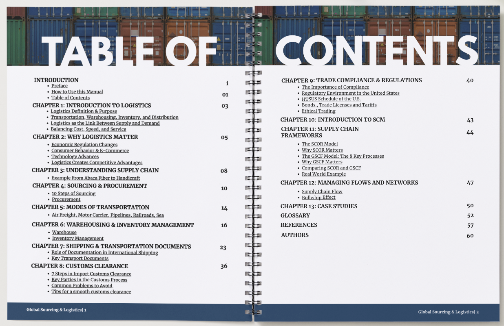
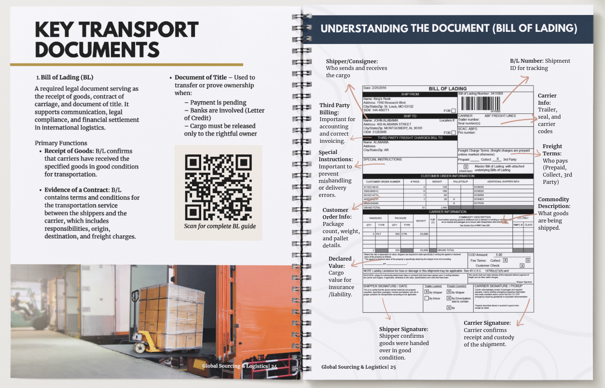

Case Study
Global Logistics Manual
Designed a comprehensive instructional manual that simplifies global sourcing, logistics, customs, transportation, and inventory management into an easy-to-follow, step-by-step learning resource.
Overview
Global sourcing and logistics involve interconnected processes such as procurement, transportation, customs, warehousing, inventory management, and supply chain planning. These topics are often learned separately, making it difficult to understand how each stage contributes to the movement of products through the supply chain.
To address this, I designed a comprehensive instructional manual that organizes these concepts into a structured, step-by-step learning resource. The manual combines clear explanations, process maps, diagrams, real-world examples, and practical frameworks to help readers understand the complete logistics journey—from sourcing raw materials to final delivery and supply chain optimization.
Screenshots

